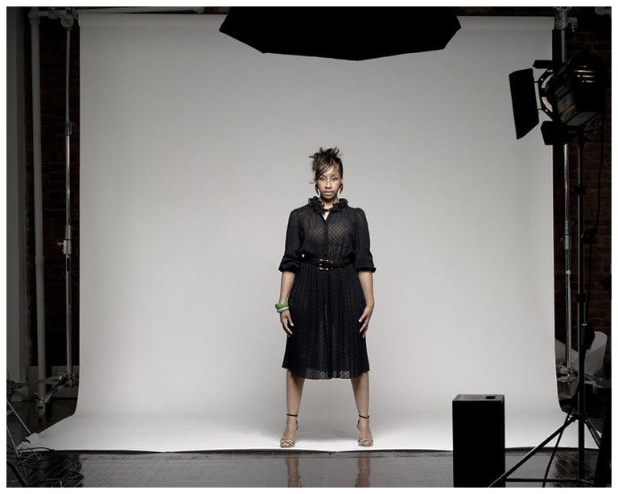

Dominga Martin
WRITER / DIRECTOR / PRODUCER

Dominga Martin, originally from Boston, Massachusetts, attended Clark Atlanta University where she studied Radio, TV, Film and Journalism. To describe Dominga is to understand her voracious passion for creating art and purveying culture, as these intrinsic elements define her. She is both visionary and perceptive in her quest to leave an indelible imprint with all she pursues in life. Further exploration reveals a rich legacy of artists and activists in Dominga’s bloodline, which includes a 120 year old collection donated to the Smithsonian Anacostia Museum, circa 1883. In addition, her mother, is an activist on human rights/poverty issues and recipient of the prestigious Martin Luther King Drum Major for Justice Award.
A journalist by trade, Dominga’s diverse talents span the worlds of film, fashion, and music. Her 15+ years in the entertainment industry began as a production assistant/director assistant for various film and music videos. As a former VJ for Atlanta’s premiere video show “In the Mixx”, she mingled with and interviewed today’s most talented entertainers, including Sean “Diddy” Combs, and Ludacris, to name a few.
In 2001, Dominga branched out to other creative endeavors and formed House of Ming, a boutique motion picture company that has developed two short films; bum in 2001 and Yellow in 2005, both of which she is writer/director. bum received acclaim at the Roxbury Film Festival (2001). Yellow was featured in the 9th Annual Reel Sisters Film Festival (2006), the Hollywood Black Film Festival (2006), BET’s The Best Shorts (October, 2006) and a host of other festivals from NYC to LA. Additionally, the film was the winner of the “Best Short Narrative” category at the 5th Annual Hip Hop Odyssey International Film Festival (2007). Yellow screened at BAM Rose Cinemas in Brooklyn, NY in their “Creatively Speaking Series” (May, 2008). Yellow will soon be released on Urban Slam Vol. 2, a DVD compilation with several acclaimed shorts.
House of Ming also produced and directed Fiche d’Identite, a documentary which follows the first President of Senegal’s – Leopold Sedhar Senghor – grand-daughter and her friends on their journey through the American immigration system, while portraying their life in the entertainment industry.
Dominga’s journalism career has flourished over the years. She worked with entertainment publication Rolling Out, Atlanta, and, in turn, launched Rolling Out, New York. She has also freelanced for VIBE, UPSCALE and ESSENCE magazines, Men’s Fitness online, and Blackfilm.com. While Editor-in-Chief of a start up publication, she met Gladymir Leveille, and the two subsequently launched Crème Magazine in 2004. Crème Magazine was established as a publishing platform that caters to an older, more sophisticated and intellectual crowd that still wants to be up to date on the hottest trends and news in entertainment, fashion, culture, arts, and politics.
Dominga’s latest video production “Forever” (The Floacist & Musiq Soulchild) has been featured on MTV Music, VH-1 and BET, and has surpassed the 1⁄2 million-viewer mark on You Tube. It premiered on VIBE.com to over 1 Million viewers.
Dominga was also featured in The Her Word As Witness: Women Writers of the African Diaspora Photo Exhibit featuring 35 portraits of some of today's most compelling writers, literary and performance giants. Dominga stands alongside award-winning Haitian novelist and essayist Edwidge Danticat; President Barack Obama's inaugural poet, Elizabeth Alexander; Grammy award recipient, Esperanza Spalding and poet Sonia Sanchez. The photo exhibit curated/photographed by Laylah Amatullah Barrayn ran from December 1, 2011 - March 31, 2012 at the Skylight Gallery in Brooklyn. The exhibit is now on display at New York University until September 30, 2012.
Dominga is currently in development of her first feature film which is being produced by Monty Ross who produced Spike Lee’s first 7 films including: School Daze, Do The Right Thing and Jungle Fever.